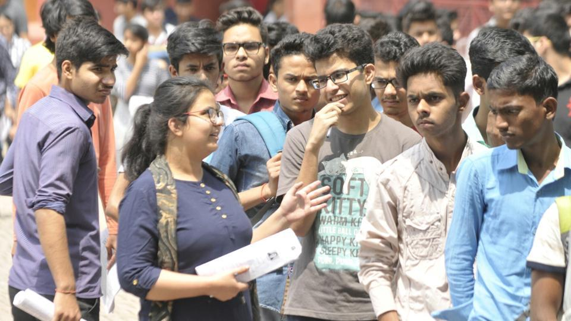

News About education

A reality check of a primary school in Naubasta Kala in Chinhat block of Lucknow revealed that students are yet to receive their new textbooks in English.At least 5,000 government-run primary schools got the ‘English medium’ tag on April 2 with the launch of School Chalo Abhiyan in UP, but there is hardly any change at the ground level....

JEE Main 2018: The examination evoked mixed reaction from students across the country. Here is how students across the country reacted after the exam The Central Board of Secondary Education (CBSE) conducted the Joint Entrance Exam (JEE) Main 2018 across various Centres in the country on Sunday..

WBJEE is the common entrance examination for admission to undergraduate courses in engineering and technology, pharmacy and architecture in universities, govt colleges and self-financed institutes in West Bengal.

All students will have to follow a daily routine of physical activity with games and sports and each of them will pick one game and learn it during the three weeks. New students in more than 3,000 engineering colleges under the All India Council for Technical Education (AICTE) will undergo a compulsory induction programme..
WBJEE is the common entrance examination for admission to undergraduate courses in engineering and technology, pharmacy and architecture in universities, govt colleges and self-financed institutes in West Bengal.

SC has rapped the Kerala government for promulgating an ordinance nullifying its last year’s order freezing illegal admissions to two medical colleges in the state and stayed its operation.The Supreme Court has rapped the Kerala government for promulgating an ordinance nullifying its last year’s order freezing illegal admissions...

It is up to Indian Institutes of Managment (IIMs) to decide whether they want to award degrees or diplomas to their postgraduate students, according to officials in the HRD ministry.It is up to Indian Institutes of Managment (IIMs) to decide whether they want to...